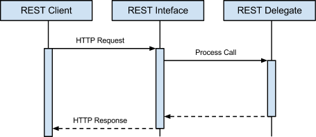

Contents
Figure 1.1 - REST request-response sequence diagram
Figure 1.2 - Importing rest4BW™ into a project
Figure 1.3 - Example REST Interface Usage
Implementing the REST Delegate
Figure 1.4 - “Coffee Order” state machine diagram
1. HTTP Connection automatically responds to HTTP OPTIONS method
2. MimeParts are incorrectly parsed by the HTTP Receiver
Introduction
rest4BW™ provides a framework to facilitate the task of building REST services in TIBCO BusinessWorks.
Out of the box, it provides Query, Accept Header and MultiPart Mime parsing of HTTP requests, and HTTP Status Code schemas to facilitate building HTTP responses.
If you want to see an example of the rest4BW™in use, please check out the Coffee Shop Example under the Source Code section.
Minimum Software Requirements
The framework was developed with the following software versions, and has not been tested for backwards compatibility. It is recommended to use the same, or a newer version when developing with rest4BW™.
Software | Version |
TIBCO BusinessWorks™ | 5.9 |
TIBCO Designer™ | 5.7 |
TIBCO Runtime Agent™ | 5.7 |
Resources
The rest4BW™ homepage and binary can be found at http://windyroad.org/software/open-source/rest4BW/.
The rest4BW™ source code is stored in a Mercurial repository. It can be checked out by executing the following command:
hg clone https://hg.assembla.com/rest4BW.2
Community discussion forums for rest4BW™ can be found at http://windyroad.org/discussion/ and the Windy Road team is looking forward answer your support questions at http://windyroad.org/support/.
Architecture
Overview
The following sequence diagram shows the interaction of a REST request-response scenario using rest4BW™ (Figure 1.1).

Figure 1.1 - REST request-response sequence diagram
REST Client
Is responsible for sending the HTTP request and receiving the HTTP response. It is not implemented by rest4BW™.
REST Interface
Is responsible for handling the request and response parsing. It is implemented by rest4BW™.
REST Delegate
Is responsible for handling the business logic and processing of the REST service. A template is supplied by rest4BW™, with the implementation left to the developer.
Using rest4BW™
Setup
Please see the Resources section, for instructions on obtaining the rest4BW™ binary artifact.
- Download rest4BW.projlib
- In TIBCO Designer:
- Select the root folder of your project
- Select the Design Time Libraries tab
- Press the ‘+’ button
- Select the rest4BW.projlib file, to import into your project
- You should now see the imported rest4BW™ project (the purple highlighted folder in the Figure 1.2 below)

Figure 1.2 - Importing rest4BW™ into a project
Using the REST Interface
The REST Interface is responsible for:
- parsing the HTTP request into a REST request
- invoking the REST Delegate
- rendering the REST response into a HTTP response
- performing Error Handling
The process is located under /rest4BW/REST Interface.process
To implement:
- Setup a HTTP Connection (as per your application’s requirements)
- Setup a new process as per Figure 1.3, and configure the HTTP Receiver/Response appropriately.

Figure 1.3 - Example REST Interface Usage
- Map the output directly from HTTP Receiver into REST Interface.
- Map the output directly from REST Interface into Send HTTP Response.
- Set the $REST_Interface/root/handlerProcess variable to the REST Delegate process.
- e.g. /coffee-shop/REST Service.process
- Optionally, set the $REST_Interface/root/exceptionShielderProcess variable to a custom Exception Shielder process (see the /rest4BW/Templates directory).
N.B. It is recommended to add the following headers to HTTP Processes to fully utilise the REST interface.
- HTTP Receiver - host, If-Modified-Since, ETag
- Send HTTP Response - Allow, Cache-Control, Last-Modified, Expires, ETag
For an example implementation, please see the Coffee Shop Example.
Implementing the REST Delegate
The REST Delegate is the central process of the REST service, and is responsible for implementing the business logic and providing a REST response.
The implementation is left to the developer, however a template REST Delegate process is supplied under /rest4BW/Templates/REST Delegate.process.
For an example implementation, please see the Coffee Shop Example.
Recommended Reading
- HTTP Connection automatically responds to HTTP OPTIONS method
- MimeParts are incorrectly parsed by the HTTP Receiver
Source Code
Please refer to the Resources section, for instructions on obtaining the source code.
To make use of the automated build scripts, you will need to install Apache Ant™.
Once the source code is checked out, the following projects can be opened from within TIBCO Designer.
Resource | Project Name |
/src/main/bw/rest4BW | rest4BW |
/Examples/coffee-shop/src/main/bw/coffee-shop | coffee-shop |
Coffee Shop Example
Overview
The Coffee Shop Example demonstrates an implementation of a RESTful service, utilising the rest4BW™ API.
The example is based around the ability to create, action and view “coffee order” objects.
The following table shows resources, and their demonstrated functionality.
Resource | Demonstrated functionality |
/Coffee Shop Service.process | REST Interface usage |
/coffee-shop/REST Service.process | REST Delegate implementation |
/coffee-shop/services/Order Service.process | RESTful processing of a request |
/coffee-shop/services/Order/edit.proces | Throwing a REST HTTP Status Code error |
/test/uatTestSuite/* | Testing the REST Delegate |
/coffee-shop/model/CoffeeShop.xsd | The “Coffee Order” schema |
The following schema models the “Coffee Order” object.

The following diagram models the states of a “Coffee Order”, and the actions that can be performed upon it.
Figure 1.4 - “Coffee Order” state machine diagram
Please refer to the /test/uatTestSuite/* Feature and Scenario test processes, which were used to drive the coffee-shop’s development.
License
© Windy Road Technology Pty. Limited 2009-2012
rest4BW™ is distributed under the terms of the GNU Lesser General Public License (LGPL).
Permission to waive conditions of this license may be requested from: http://support.windyroad.org
This program is free software: you can redistribute it and/or modify it under the terms of the GNU Lesser General Public License as published by the Free Software Foundation, either version 3 of the License, or (at your option) any later version.
This program is distributed in the hope that it will be useful, but WITHOUT ANY WARRANTY; without even the implied warranty of MERCHANTABILITY or FITNESS FOR A PARTICULAR PURPOSE. See the GNU Lesser General Public License for more details.
You should have received a copy of the GNU Lesser General Public License along with this program. If not, see: http://www.gnu.org/licenses/
Appendix
1. HTTP Connection automatically responds to HTTP OPTIONS method
Problem
The default HTTP Connection automatically responds to OPTIONS HTTP methods, without being processed by my HTTP receiver. This is a problem if you want to explicitly handle the OPTIONS HTTP method, as you typically would in a RESTful application.
Solution
In TIBCO’s HTTP Connection Configuration tab, change the Server Type from "Tomcat" to "HttpComponent". This will allow you to process the OPTIONS HTTP method.
2. MimeParts are incorrectly parsed by the HTTP Receiver
Problem
In previous TIBCO releases, when the content-type of an incoming message was "multipart/*", the first part of the message was presented as the POSTDATA. This is incorrect according to MIME specification.
Solution
The bw.plugin.http.handleAllMimePartsAsAttachment property fixes this problem.
If this property is set to true and the top-level content-type of the incoming HTTP message is "multipart/*", then a HTTP Receiver will present all the MIME parts as attachments and the POSTDATA field will be empty. If this property is set to false (the default value), backward compatibility is maintained and the first MIME part is presented as the POSTDATA.
N.B. Do not check the Parse Post Method Data field on the HTTP Receiver process starter when this property is set to true. This will cause an error to be thrown.
Example: TIBCO Designer
- Add the following property to your <designer_home>/<version>/properties.cfg file (create the file if it doesn't already exist)
- bw.plugin.http.handleAllMimePartsAsAttachment=true
- Restart Designer